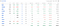
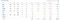
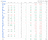
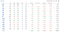

My 3 years winning stocks portfolio

These portfolios were set up 3 years ago expecting they will benefit from the expansion of the technology of micro fracturing and political decision of the US to no dependant on external oil provision and the projects of building a lot of electric power units working with gas. Now, these portfolios are doing well what’s means that I had a good predictive taste or maybe power using fundamental analysis without algorithms and by targeting long-term growth.



This one was set up 3 years ago expecting that it will benefit from the emerging of voice-controlled devices like Alexa and others. These companies are involved in the design and building of microarrays technology that is used in devices like personal home robots
I was also betting 3 years ago that US steel companies will benefit from the restrictions on importations of Trump’s government on steel and products like that. This happens to be a failure now.

I am not trying to prove that I have a powerful skill of picking stocks, computers maybe are better than me What I experienced as a Quantitative Engineer working on financial projects. But this is just for showing you and tell you can pick stocks.
I just built another one today about the trend of the short Squeeze happening now. we Will see how it will perform.